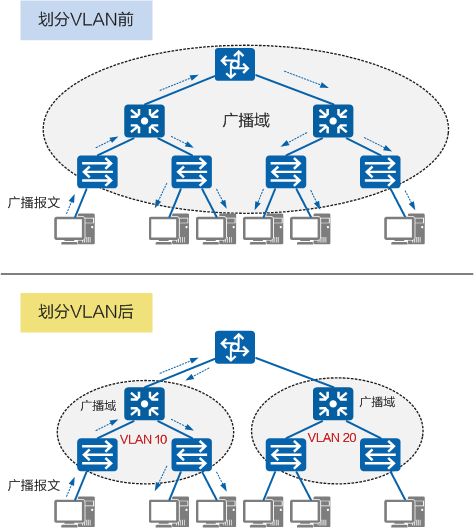

VLAN
VLAN 是什么
VLAN（Virtual Local Area Network）即虚拟局域网，是将一个物理的 LAN 在逻辑上划分成多个广播域的通信技术。
每个 VLAN 是一个广播域，VLAN 内的主机间可以直接通信，而 VLAN 间则不能直接互通。这样，广播报文就被限制在一个 VLAN 内。
为什么需要 VLAN
早期以太网是一种基于 CSMA/CD（Carrier Sense Multiple Access/Collision Detection）的共享通讯介质的数据网络通讯技术。当主机数目较多时会导致冲突严重、广播泛滥、性能显著下降甚至造成网络不可用等问题。通过二层设备实现LAN互连虽然可以解决冲突严重的问题，但仍然不能隔离广播报文和提升网络质量。
在这种情况下出现了 VLAN 技术。这种技术可以把一个 LAN 划分成多个逻辑的 VLAN，每个 VLAN 是一个广播域，VLAN内的主机间通信就和在一个 LAN 内一样，而 VLAN 间则不能直接互通，广播报文就被限制在一个 VLAN 内。如下图所示。
因此，VLAN 具备以下优点：
- 限制广播域：广播域被限制在一个 VLAN 内，节省了
带宽，提高了网络处理能力。 - 增强局域网的安全性：不同 VLAN 内的报文在传输时
相互隔离，即一个 VLAN 内的用户不能和其它 VLAN 内的用户直接通信。 - 提高了网络的健壮性：故障被限制在一个 VLAN 内，本 VLAN 内的故障不会影响其他 VLAN 的正常工作。
- 灵活构建虚拟工作组：用 VLAN 可以划分不同的用户到不同的工作组，同一工作组的用户也不必局限于某一固定的物理范围，网络构建和维护更方便灵活。
VLAN vs 子网
| VLAN | 子网 | |
|---|---|---|
| 区别 | 1. 划分二层网络。 2. 配置 VLANIF接口才能互通。3. 一个 LAN 内可划分 4094 个 VLAN，VLAN 内设备数量不受限制。 |
1. 划分三层网络。 2. 只要通过路由实现互通，不同子网就能互访。 3. 划分网段数量会影响各个子网内的设备最大数。 |
| 联系（无） | 同一 VLAN 内，可以划分一或多个网段。 | 同一子网内，可以划分一或多个VLAN。 |
- VLAN：将一个物理的 LAN 在逻辑上划分成多个广播域。
- 子网：通过将 IP 地址的网络部分进一步划分为若干个子网，可以 解决 IP 地址空间利用率低 和 两级 IP 地址不够灵活 的问题。
与 VLAN 相类似的是，子网也可以隔离主机间的通信。属于不同 VLAN 的主机之间不能直接通信，属于不同的子网的主机之间也不能直接通信。但二者没有必然的对应关系。
VLAN Tag 和 VLAN ID
要使交换机能够分辨不同 VLAN 的报文，需要在报文中添加标识 VLAN 信息的字段。IEEE 802.1Q协议规定，在以太网数据帧中加入 4 个字节的 VLAN 标签（又称 VLAN Tag，简称Tag），用以标识 VLAN 信息。
数据帧中的 VID 字段标识了该数据帧所属的 VLAN，数据帧只能在其所属 VLAN 内进行传输。VID 字段代表 VLAN ID，VLAN ID 取值范围是 0～4095。由于 0 和 4095 为协议保留取值，所以VLAN ID 的有效取值范围是 1～4094。
交换机内部处理的数据帧都带有 VLAN 标签。而交换机连接的部分设备（如用户主机、服务器）只会收发不带 VLAN tag 的传统以太网数据帧。因此，要与这些设备交互，就需要交换机的接口能够识别传统以太网数据帧，并在收发时给帧添加、剥除 VLAN 标签。添加什么 VLAN 标签，由接口上的缺省 VLAN（Port Default VLAN ID，PVID）决定。
交换机接口类型
- Access 接口：一般用于和不能识别 Tag 的用户终端（如用户主机、服务器）相连，或者不需要区分不同 VLAN 成员时使用。
- Trunk 接口：一般用于连接交换机、路由器、AP 以及可同时收发 Tagged 帧和 Untagged 帧的语音终端。它可以允许多个 VLAN 的帧带 Tag 通过，但只允许属于缺省 VLAN 的帧从该类接口上发出时不带Tag（即剥除Tag）。
- Hybrid 接口：Hybrid接口既可以用于连接不能识别Tag的用户终端（如用户主机、服务器）和网络设备（如Hub），也可以用于连接交换机、路由器以及可同时收发Tagged帧和Untagged帧的语音终端、AP。它可以允许多个VLAN的帧带Tag通过，且允许从该类接口发出的帧根据需要配置某些VLAN的帧带Tag（即不剥除Tag）、某些VLAN的帧不带Tag（即剥除Tag）。
VLAN 常见使用场景
- VLAN 间用户的二层隔离。同楼层不同公司 or 同公司不同部门之间实现网络的强隔离。
- VLAN 间用户的三层互访。两个 VLAN 之间想要临时互相访问，可以同时接入第三台交换机，并为第三胎交换机配置
VLANIF。
VLAN的相关协议
IEEE 802.1Q
IEEE 802.1Q（也被称为Dot1q）即Virtual Bridged Local Area Networks协议，规定了 VLAN 的实现标准。与标准的以太网数据帧相比，VLAN 数据帧增加了 1 个 4 字节的 VLAN 标签。
LNP
链路类型协商协议（Link-type Negotiation Protocol，LNP）用来动态协商以太网接口的链路类型为 Access 或者 Trunk。
以太网接口的链路类型协商为 Access，缺省情况下加入 VLAN1。
以太网接口的链路类型协商为 Trunk，缺省情况下加入 VLAN1～4094。
QinQ
QinQ（802.1Q-in-802.1Q）协议出自 IEEE 802.1ad 标准协议，通过在 802.1Q 标签报文的基础上再增加一层 802.1Q 的Tag来达到扩展 VLAN 空间的功能，可以使私网 VLAN 透传公网。
由于在骨干网中传递的报文有两层 802.1Q Tag（一层公网Tag，一层私网Tag），即 802.1Q-in-802.1Q，所以称之为 QinQ 协议。
VLAN 的局限性和 VXLAN
随着网络技术的发展，云计算凭借其在系统利用率高、人力和管理成本低、灵活性和可扩展性强等方面表现出的优势，已经成为目前企业IT建设的新趋势。而服务器虚拟化作为云计算的核心技术之一，得到了越来越多的应用。
VLAN 作为传统的网络隔离技术，在标准定义中 VLAN 的数量只有 4096 个，无法满足大型数据中心的租户间隔离需求。另外，VLAN 的二层范围一般较小且固定，无法支持虚拟机大范围的动态迁移。
因此，RFC 定义了 VLAN 扩展方案 VXLAN（Virtual eXtensible Local Area Network，虚拟扩展局域网）。VXLAN 采用 MAC in UDP（User Datagram Protocol）封装方式，是NVO3（Network Virtualization over Layer 3）中的一种网络虚拟化技术。VXLAN 完美地弥补了 VLAN 的上述不足，一方面通过 VXLAN 中的 24 比特 VNI（VXLAN Network Identifier）字段，提供多达 16M 租户的标识能力，远大于 VLAN 的数量；另一方面，VXLAN 本质上在两台交换机之间构建了一条穿越数据中心基础IP网络的虚拟隧道，将数据中心网络虚拟成一个巨型“二层交换机”，满足虚拟机大范围动态迁移的需求。
VXLAN
什么是VXLAN？
VXLAN（Virtual eXtensible Local Area Network）即虚拟扩展局域网，是大二层网络中广泛使用的网络虚拟化技术。在源网络设备与目的网络设备之间建立一条逻辑 VXLAN 隧道，采用 MAC in UDP（User Datagram Protocol）封装方式，即，将虚拟机发出的原始以太报文完整的封装在UDP报文中，然后在外层使用物理网络的IP报文头和以太报文头封装，这样，封装后的报文就像普通IP报文一样，可以通过路由网络转发，这就像给二层网络的虚拟机插上了路由的翅膀，使虚拟机彻底摆脱了二、三层网络的结构限制。
为什么要使用 VXLAN？
- VLAN ID数量限制
- TOR交换机MAC地址表限制
- 灵活的虚机部署和部署
- 更好的利用多条网络链路
华为云 CCE 服务通过 VXLAN 协议封装实现容器隧道网络
https://support.huaweicloud.com/usermanual-cce/cce_10_0282.html
容器隧道网络在节点网络基础上通过隧道封装另构建的独立于节点网络平面的容器网络平面，CCE集群容器隧道网络使用的封装协议为VXLAN，后端虚拟交换机采用的是openvswitch，VXLAN是将以太网报文封装成UDP报文进行隧道传输。容器隧道网络具有付出少量隧道封装性能损耗，即可获得通用性强、互通性强、高级特性支持全面（例如NetworkPolicy网络隔离）的优势，可以满足大多数性能要求不高的场景。
参考
- VXLAN vs VLAN：https://zhuanlan.zhihu.com/p/36165475
- 什么是 VLAN？：https://info.support.huawei.com/info-finder/encyclopedia/zh/VLAN.html
- 什么是 VXLAN？：https://info.support.huawei.com/info-finder/encyclopedia/zh/VXLAN.html
转载请注明来源，欢迎对文章中的引用来源进行考证，欢迎指出任何有错误或不够清晰的表达。可以在下面评论区评论，也可以邮件至 nz_nuaa@163.com